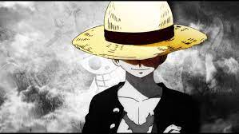

Anime Page Layout
Anime Layout for hands-On
About Eiichiro Oda
Photo of Eiichiro Oda
Eiichiro Oda was born on January 1, 1975 in Kumamoto, Japan. He said that at the age of four he resolved to become a manga artist in order to avoid having to get a "real job"
One Piece
Anime of Pirates, Feb 1, 2022

One Piece (stylized in all caps) is a Japanese manga series written and illustrated by Eiichiro Oda. It has been serialized in Shueisha's shōnen manga magazine Weekly Shōnen Jump since July 1997, with its individual chapters compiled into 101 tankōbon volumes as of December 2021. The story follows the adventures of Monkey D. Luffy, a boy whose body gained the properties of rubber after unintentionally eating a Devil Fruit. With his pirate crew, the Straw Hat Pirates, Luffy explores the Grand Line in search of the world's ultimate treasure known as the "One Piece" in order to become the next King of the Pirates.
Naruto
Anime of Ninja, Feb 1, 2022
One Piece (stylized in all caps) is a Japanese manga series written and illustrated by Eiichiro Oda. It has been serialized in Shueisha's shōnen manga magazine Weekly Shōnen Jump since July 1997, with its individual chapters compiled into 101 tankōbon volumes as of December 2021. The story follows the adventures of Monkey D. Luffy, a boy whose body gained the properties of rubber after unintentionally eating a Devil Fruit. With his pirate crew, the Straw Hat Pirates, Luffy explores the Grand Line in search of the world's ultimate treasure known as the "One Piece" in order to become the next King of the Pirates.